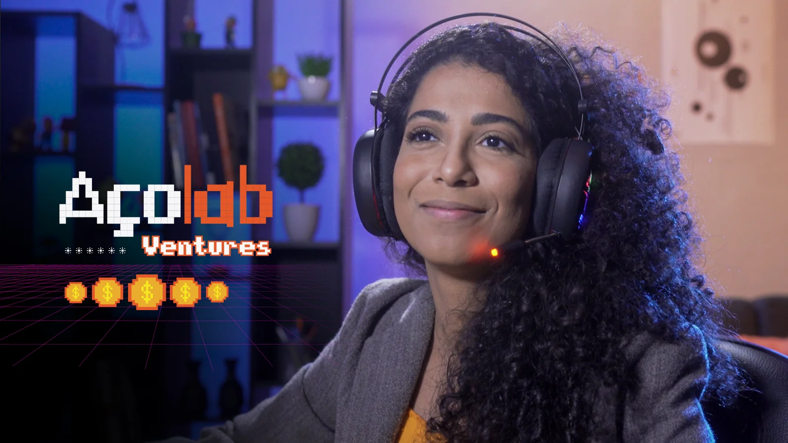
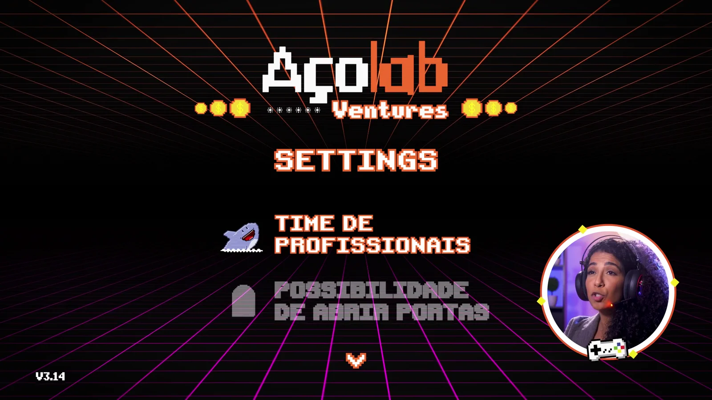
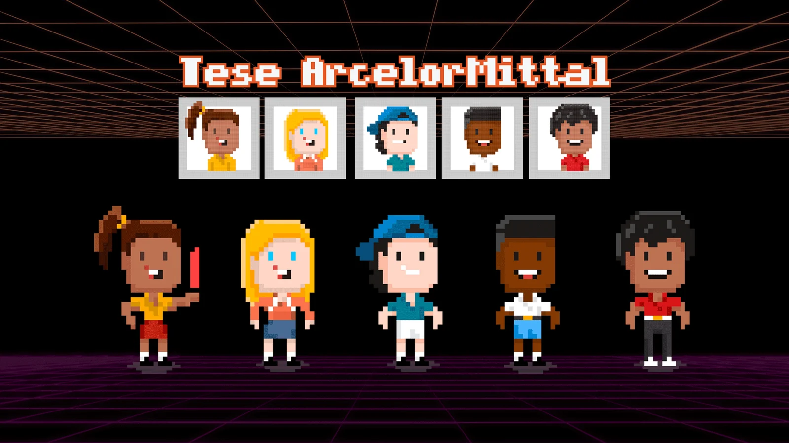
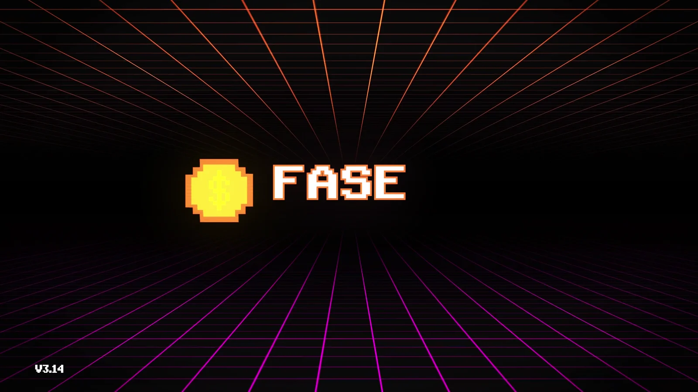
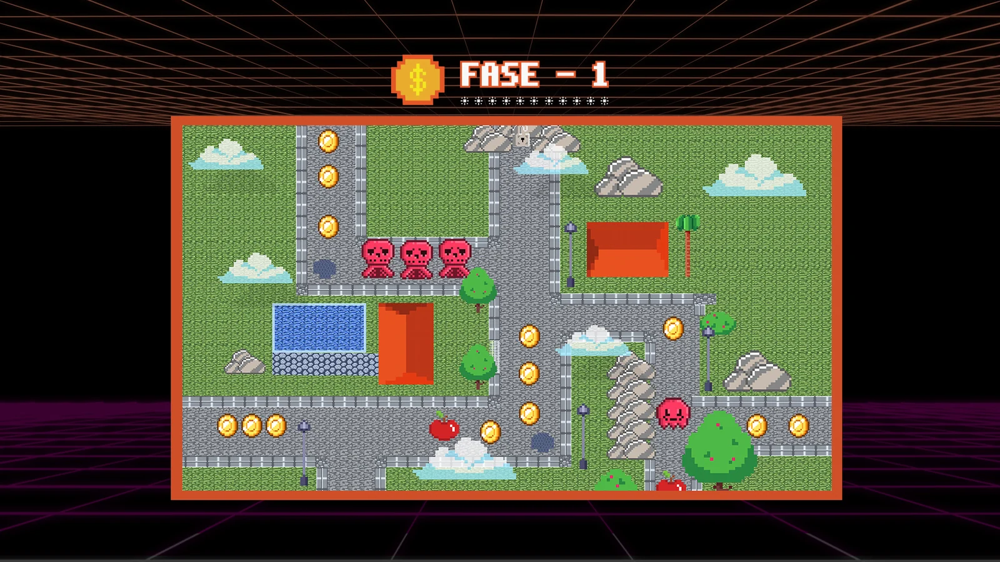
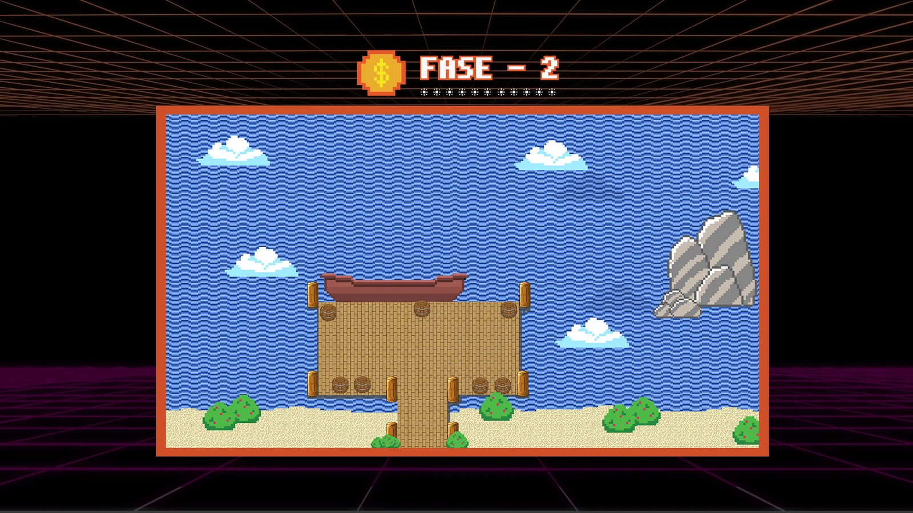
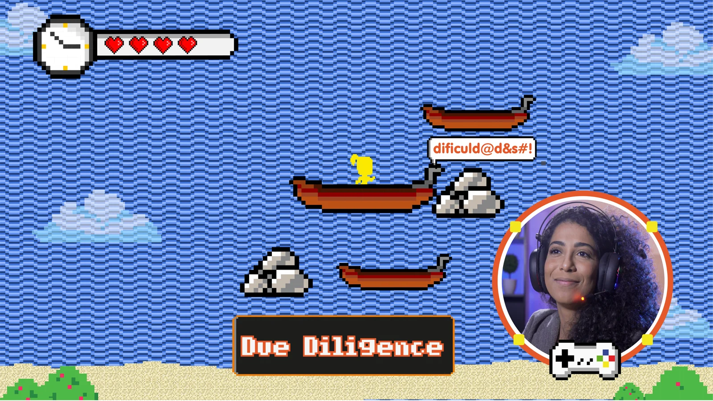
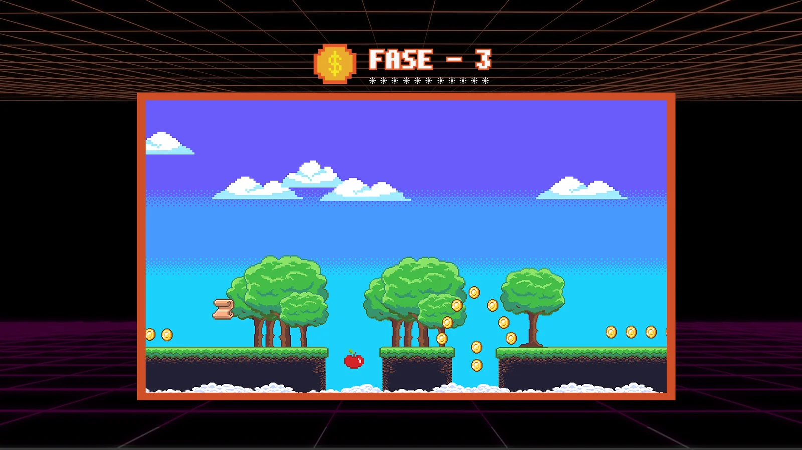
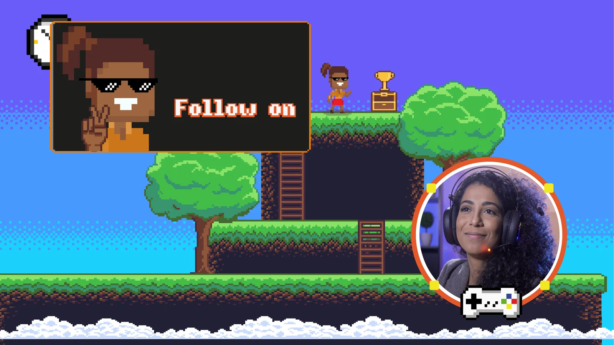
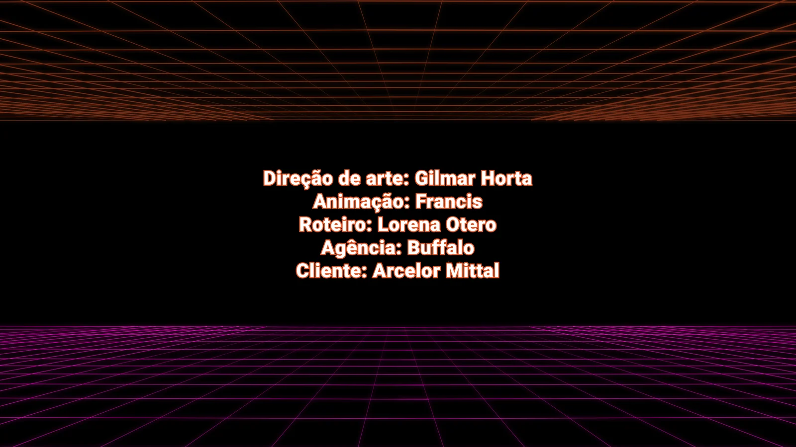

INSERT COIN
ARCELORMITTAL · 2022 · DIREÇÃO DE ARTE
A ArcelorMittal precisava explicar sua tese de corporate venture capital — que empresa procura, o que oferece em troca, como funciona o processo — para gente que nunca tinha ouvido falar do assunto. Em vez de um institucional, o filme virou um jogo.
A direção de arte fechou um vocabulário e não abriu mão dele: tipografia bitmap, grade neon com ponto de fuga no centro, o laranja da marca contra o magenta do piso, e um HUD — vidas, moedas, pontuação — que segue a apresentadora do primeiro ao último quadro. Cada ideia do roteiro precisou caber nesse sistema: virar item de menu, ficha de personagem, inimigo ou fase. Nada de caixa de texto solta por cima da imagem.
A apresentadora não narra por fora: ela está dentro do jogo, num círculo de webcam de streamer, reagindo ao que acontece na tela ao lado.
00 - ABERTURA
O logotipo entra sobre a imagem real. Antes de explicar qualquer coisa, o filme avisa em que língua vai falar.

01 - SETTINGS
O que a ArcelorMittal põe na mesa vira menu de configuração: um item por vez, aceso em laranja quando chega a vez dele, apagado quando passa.

02 - SELECT PLAYER
O perfil de empresa que a tese procura vira tela de seleção de personagem. Cada ficha é um recorte de mercado; a certa acende, as outras ficam em cinza.

SELECT PLAYER
03 - FASE 01 · PROSPECÇÃO
Prospecção, análise e inteligência estratégica num mapa visto de cima: moedas para juntar, inimigos para desviar, um caminho de pedra que organiza a leitura.


FASE 01 · EM JOGO
04 - FASE 02 · DUE DILIGENCE
Negociação e due diligence em mar aberto. A parte chata do processo é a mais difícil do jogo — e o tubarão não precisa de legenda.


FASE 02 · O TUBARÃO
05 - FASE 03 · INCORPORAÇÃO
Incorporação e follow on: a fase de plataforma, com o troféu no alto e o placar no maior número que aparece no filme.


06 - A FOLHA DE ELEMENTOS
Tudo o que entra em cena sai daqui: personagens em duas poses, inimigos, o barco, o tubarão, as pedras, e a papelaria do HUD — relógio, vidas, moeda, diamante, baú, troféu, cadeado, pergaminho.
SPRITE SHEET
07 - CRÉDITOS
A cartela final fecha o ciclo: quem fez, para quem, na mesma grade em que o filme começou.

08 - O FILME
Três minutos e vinte e nove segundos, do PRESS START aos créditos. Com som.